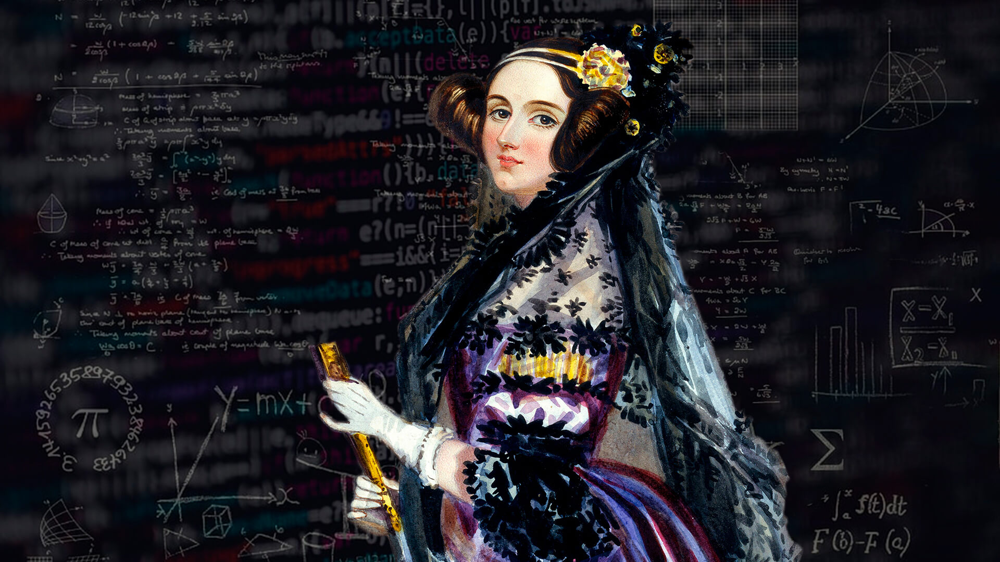

Sabemos que o Alan Turing é considerado O "PAI DA COMPUTAÇÃO", mas quem de fato teve a ideia do primeiro programa computacional foi Ada Lovelace. Em meados do século XIX, a famosa condessa de Lovelance, chamada de Augusta Ada King, analisava e traduzia diversos materiais dos matemáticos contemporâneos. 
Como resultado, isso ajudou para que o primeiro algoritmo do mundo fosse desenvolvido. No entanto, nessa epóca, Lovelace não tinha á sua disposição máquinas que fossem capazes de testar esses códigos e provar que a sua lógica estava correta.
A boa notícia é que a descoberta de Ada Lovelace, foi testada e comprovada anos depois de sua morte, quando já existiam computadores com a capacidade de processar esse tipo de algoritmo. É por isso que atualmente ela é considerada a mãe da computação e, inclusive, existe um prêmio em seu nome destinado ás pessoas que desenvolvem inovações .
"i never am really satisfied that i understand anything; beacause, understand it well as i may, my comprehension can only be an infinitesimal fraction of all i want to understand." -Ada Lovelace